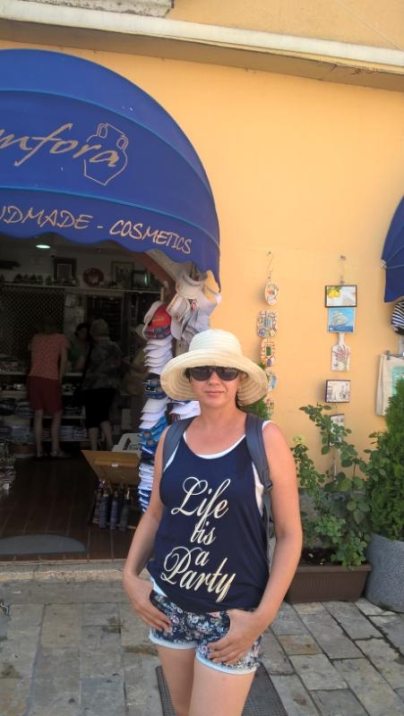
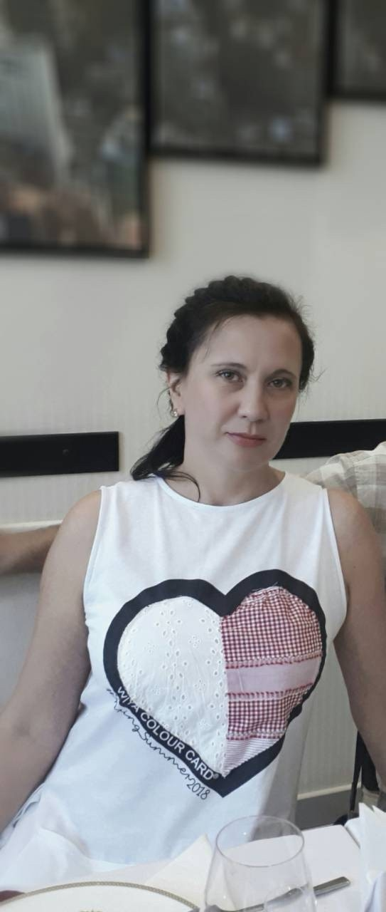

Родилась: 10.04.1971
Род: Хмелевские
Возраст: 52
Место жительства: Днепропетровская обл. г. Кривой Рог
Основное занятие: экономист, банковский работник, страховщик
Отец: Хмелевский Николай Иванович
Мать: Хмелевская (Маврешко) Ольга Васильевна
Брат: Хмелевский Виктор Николаевич
Муж: Ступак Юрий Владимирович
Сын: Ступак Андрей Юрьевич
Черногория. media-share-0-02-04-7fe1364717c307d841287f9c5c5afb7d5df8f9f34f79fb5d1aa91d7c32828d66-Picture. |